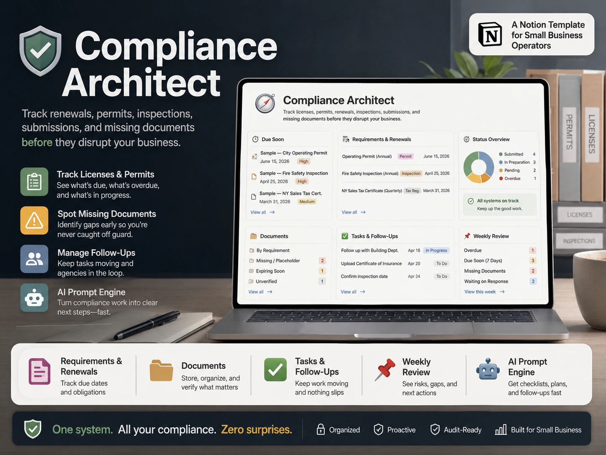

Deadlines and dates
Track upcoming permit dates, license renewals, recurring tasks, and items that need attention.
Compliance Architect helps small teams and operators track permits, renewals, inspections, missing documents, follow-ups, deadline status, and weekly review from one organized Notion workspace.

Track upcoming permit dates, license renewals, recurring tasks, and items that need attention.
Keep document status, missing items, submissions, follow-up owners, and evidence notes visible.
Review inspections, open tasks, upcoming deadlines, and items that need action.
Use it when renewal dates and supporting documents need one visible place.
Use it when missing documents, submissions, and evidence notes need tracking.
Use it to review upcoming items before they become urgent.
Yes. You can adjust the Notion views, properties, categories, deadlines, and review process.
Yes. It is designed for recurring dates such as permits, renewals, inspections, missing documents, and review tasks.
It can work for a solo operator, admin, freelancer, or small team.
Use one Notion workspace for renewals, permits, documents, follow-ups, and weekly review.